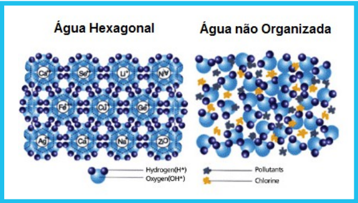
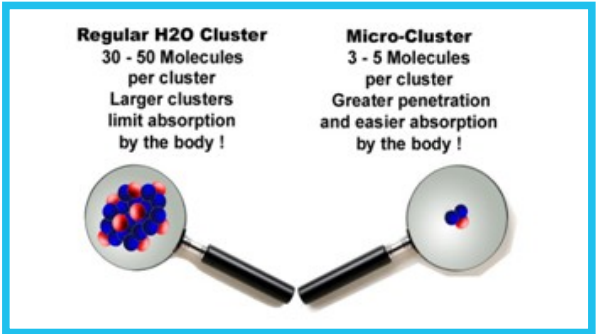
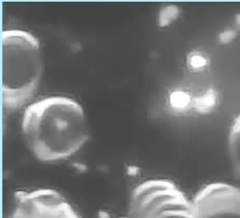
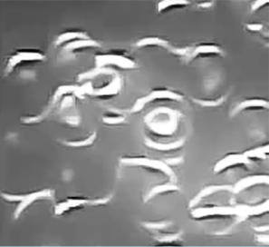

Água potável não é sinônimo de mais saúde!
A água é vital para garantir uma boa saúde e qualidade de vida. Mas, se não tratada corretamente, pode se tornar uma das maiores causas de transmissão de doenças. Não se engane, a água pode ser potável, não quer dizer que está em boas condições para o consumo humano. Tanto a quantidade de produtos químicos, como a qualidade do tratamento pode afetar a nós consumidores. De acordo com a Caesb são usados cal virgem, sufato de alumínio, clorero férrico, cloro, fluossilicato de sódio e o ácido fluossilicico. Veja o que acontece com você ao ingerir qualquer um desses produtos:
- cal virgem
- sufato de alumínio
- cloreto férrico
- cloro
- fluossilicato de sódio
- ácido fluossilicico
Se as medidas preventivas não são tomadas e não tiver um tratamento adequado da água, corre o risco sermos contaminados por diarreia, hepatite A, bacterias e vírus. Mas após o tratamento, devido os agentes químicos, como os disruptores endócrinos, cuja exposição de pequenas doses por um longo período de tempo pode causar, câncer de mama, câncer de próstata, endometriose, infertilidade, diabetes e muitas outras complicações. Então o que fazer? Se bebermos água sem tratamento podemos morrer de diarreia e se bebermos água potável morremos de câncer. Se ficar o bicho come e se correr o bicho pega. Conheça a solução!
Você conhece a água magnetizada?
Água sem tratamento magnético
Veja a as particulas de sujeira (carbonato de cálcio) que ficam espalhadas de forma desorganizada com a água sem tratamento magnético. Devido essa desorganização as incrustaçôes, entupimento nas veias e artérias
Água com tratamento magnético
Após receber o tratamento magnético, a água se organiza, produzindo aglomerados em forma circular, que são faceis de serem eliminados pelo organismo humano, pois não grudam nas laterais das veias e artérias.
Ação detergente da Agua tratada Magneticamente
Esta sujeira se acumula formando uma espeça camada de crosta que dificulta a passagem do sangue pelas veias e artérias no nosso organismo.
Água sem tratamento magnético.
As bolas pequenas representam as sujeiras, gorduras toxinas e resíduos orgânicos que ficam grudadas na molecula da água.

Moléculas de água em um rio sujo.
AS fotos de ambos os lados foram tiradas por um telescopio com almento de 200 vezes em uma gota de água.
Após o tratamento magnético da água as jujeiras soltam da água. Com isso, as incrustaçôes não se formam nas paredes das veias e artérias.
Água com tratamento magnético.